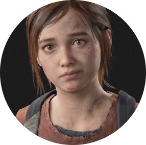
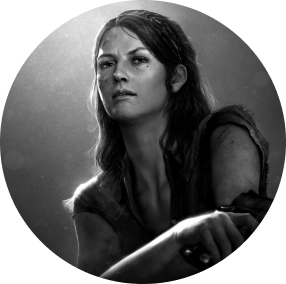

Персонажи
Хороший рукопашный боец, отлично владеет различными видами огнестрельного оружия. Один из главных игровых персонажей и протагонист игры The Last of Us. Является мощнейшим огнестрелом, требующий всего два патрона для убийства топляка. Безжалостный контрабандист, выживающий в условиях эпидемии кордицепсной церебральной инфекции, которая уничтожила практически всё человечество
Элли — вымышленный персонаж из компьютерной игры 2013 года The Last of Us, и протагонист The Last of Us Part II. В The Last of Us один из главных героев по имени Джоэл сопровождает Элли через постапокалиптические Соединённые Штаты Америки в попытке создать потенциальноелекарство от инфекции, к которой Элли имеет иммунитет. Элли озвучивала Эшли Джонсон, которая также участвовала в захвате движения для персонажа.
Томми — выживающий в условиях эпидемии кордицепсной церебральной инфекции. Младший брат Джоэла, дядя Сары, муж Марии и бывший член «Цикад». Джеффри Пирс озвучил персонажа и принял участие в «захвате движения» для этого героя. В начале игры, сбегая из города, он пытается подобрать семью, но Джоэл запретил ему это делать
Тесс — Контрабандистка, выживающая в условиях пандемии кордицепсной церебральной инфекции, состоящая с Джоэлом в деловых и, возможно, романтических отношениях. В захвате движения и озвучке приняла участие Энни Вершинг. Тесс около 35 лет, она жительница 4-й Бостонской карантинной зоны. Их отношения с Джоэлом основаны на крепком доверии друг к другу.
Зараженные
Фракции
Прохождение
Во время вступительной кат-сцены вам представят главного героя Джоэла и его дочь Сару. Как только получите управление, очнетесь в спальне Сары. Ситуация вышла из-под контроля! Можете взглянуть на зеркало и попробовать взаимодействовать с телефоном. Напротив кровати лежит поздравительная открытка, которую можно прочитать. Впрочем, она не относится к коллекционным предметам. В The Last of Us много интерактивных объектов, подобных перечисленным выше, поэтому всегда осматривайтесь и взаимодействуйте с вещами. Пройдя по коридору, вы сможете открыть дверь ванной и прочесть газету, лежащую рядом с раковиной. В ней говорится о расследовании серии странных убийств. Вернитесь в коридор, чтобы увидеть приоткрытую дверь в спальню Джоэла, откуда исходит свет. Пройдите туда и посмотрите выпуск новостей, после чего услышите/увидите взрыв. Спуститесь по лестнице. На кухне звонит мобильный телефон — возьмите его. Справа от вас на холодильнике будет записка, которую можно прочитать. С левой стороны ищите кабинет с приоткрытой застекленной дверью. Пройдите внутрь и смотрите кат-сцену. Находясь в машине, вы не сможете управлять транспортным средством, но получите полный контроль над Сарой. Можете смотреть через задние и боковые окна. В конце концов, вы столкнетесь с другим автомобилем, экран погаснет. Вы вновь управляете Джоэлом. Жмите на указанную клавишу, чтобы выбраться из разбитого автомобиля. Бегите вниз по холму к автозаправке, но после взрыва сверните направо, к театру. Томми посоветует уйти в переулок с левой стороны. Выполните его рекомендации. Джоэл попадет в засаду зараженных. Жмите на указанную клавишу и бегите по другому переулку. Двигайтесь через разрушенную стену и смотрите продолжительный видеоролик.
Карантинная зона
Спустя 20 лет после событий из пролога Джоэл работает контрабандистом в Бостоне. Глава начинается с кат-сцены, в которой вас познакомят с новым персонажем Тесс. Как только окажетесь снаружи, следуйте за женщиной через ворота, мимо группы гражданских лиц, стоящих на коленях. Вскоре после зоны с пленниками напротив блокпоста можно обнаружить автомат по продаже газет, и стоящую поблизости парочку людей. Подойдите ближе, и они узнают Джоэла. Взаимодействуйте с ними, чтобы разблокировать дополнительный диалог. После необязательного разговора вернитесь к Тесс и передайте охранникам на КПП свои документы. После взрыва грузовика вы окажетесь взаперти. Бегите тем же путем, которым сюда пришли, войдите следом за Тесс в здание с левой стороны. Она даст аптечку, которую нужно снарядить, нажав на соответствующие клавиши. Следуйте по коридору за Тесс, чтобы узнать больше о Марлин. В конце концов, вы попадете в большую комнату с развлекательным центром слева. Помогите Тесс передвинуть его, используя клавиши из подсказки.
За стеной
Двигайтесь через подвал следом за Тесс, идите по коридору направо и перепрыгните через трубопровод, нажав на нужную клавишу. Как говорит Тесс, впереди вы обнаружите снаряжение, лежащее на верстаке — 9-мм пистолет, факел и противогаз. Пройдите к Тесс и помогите ей взобраться на выступ. Вновь нажмите на ту же клавишу, чтобы она помогла залезть Джоэлу. Проберитесь внутрь кафе, двигайтесь за Тесс вверх по травянистому холму, на задний двор. Она скажет, что ищет лестницу, и вы сможете обнаружить нужный объект за машиной в зарослях прямо впереди. Поднимите лестницу и отнесите обратно к зданию справа. Используйте объект, чтобы подняться и пролезть внутрь через дыру в стене. Вы попадете в комнату с бильярдным столом. Осмотрите кухонный стол справа от следующей комнаты, чтобы найти детали, которые можно использовать для улучшения оружия. Следуйте за Тесс вниз по лестнице и, в конце концов, она укажет на споры в соседней комнате. Дождитесь, когда Джоэл наденет противогаз, затем найдите с правой стороны дыру в стене. В конце коридора будет деревянная балка, преграждающая путь. Переместите ее в сторону и протиснитесь через щель. Незнакомец просит о помощи: можете либо проигнорировать его просьбу, либо пристрелить. Не забудьте подобрать патроны с пола. Проберитесь под заблокированной дверью, чтобы столкнуться с щелкунами. Первый враг связан с туториалом: активируйте режим прослушивания, а затем подкрадитесь к нему сзади и выполните скрытное убийство. Вы можете прокрасться мимо двух следующих щелкунов или убить их; если хотите сэкономить боеприпасы, рекомендую просто проползти мимо. На кухне возьмите батончик, лежащий на стойке. Здесь же имеется задняя комната с закрытой дверью, которую можно скрыть, чтобы получить патроны. Когда закончите исследовать помещения, поднимитесь по лестнице в офис Natale & Vegiard. Выйдите из здания и спрыгните на баскетбольную площадку, следуя за Тесс через болотистую местность, между сгоревшими автобусами. Двигайтесь за Тесс к зданию, и женщина уберет с пути деревянную панель, чтобы вы могли попасть внутрь. Поднимитесь наверх, и Тесс заметит, что деревянная доска, которая использовалась в качестве импровизированного мостика, свалилась вниз. Следуйте по кругу помещения и спуститесь вниз, чтобы подобрать предмет. Поднимите доску и передайте ее Тесс. Воспользуйтесь дырой в стене, чтобы пробраться туда, где была Тесс, и пройдите по доске, используя подсказки на экране и балансируя телом. Следуйте за Тесс наружу, вниз по лестнице, а затем — через переулки, пока она не откроет дверь. Пройдите через эту дверь, чтобы продолжить путь к трущобам. Заберите со стойки боеприпасы и выходите из комнаты.
Трущобы
В начале главы, после встречи с парнем, двигайтесь через район, похожий на рынок. В конце концов, вы сядете в автобус, который используется как импровизированное убежище. Можете осмотреться и найти несколько артефактов. Затем следуйте за Тесс через переулок, где женщина подкупит местного бандита. Впрочем, вы попадете в засаду, так что заранее перезарядите пистолет. Тесс предложит обойти головорезов во внутреннем дворе, поэтому используйте ящики и контейнеры в качестве укрытия, чтобы атаковать врагов с фланга. Старайтесь целиться в головы противников, чтобы свести к минимуму расход боеприпасов. Когда все будут мертвы, следуйте за Тесс в другой переулок. Помогите Тесс взобраться на стену, после чего она сделает то же самое для Джоэла. Продолжайте двигаться вперед, пока не доберетесь до проволочного ограждения с дырой, через которую нужно проползти. Как только войдете во двор, из здания выйдут двое охранников. Ликвидируйте их по одному: пройдите сначала к головорезу с правой стороны и, пригнувшись, совершите скрытное убийство. Затем вернитесь к зданию, из которого вышли враги. Здесь есть еще два противника: используйте режим прослушивания, чтобы определить их точное местоположение. Ликвидируйте скрытно ближайшего врага и обыщите его тело, чтобы получить ключ от склада, необходимый для продвижения по сюжету. В следующей области возьмите с ящиков бутылку и используйте, чтобы заманить ближайших врагов туда, где их получится с легкостью убить. Можно использовать скрытность или расстрелять всех из пистолета, но, что очевидно, в каждом случае нужно стремиться к экономии боеприпасов. Пройдите на склад, поднявшись вверх по лестнице, либо откройте основную дверь, но будьте осторожны — на верхнем балконе находятся враги, разобраться с которыми проще, если заранее подняться по лестнице. Как только разберетесь со всеми, осмотрите офисные помещения на верхнем уровне склада, чтобы получить заточку и аптечки. Вернитесь на первый этаж склада и используйте металлическую цепь, чтобы сдвинуть большую металлическую дверь. Вы автоматически окажетесь в районе дока, где примете участие в одном из наиболее сложных сражений на данный момент игры. Окрестности доков патрулируют несколько головорезов, разобраться с которыми нужно в первую очередь. Рекомендуем пойти в левую сторону и ликвидировать охранников левее здания, а после использовать бутылки, чтобы отвлечь врагов внутри основного здания. Как только попадете внутрь, не спешите и не выдавайте себя, иначе головорезы могут напасть на Джоэла с флангов и даже сзади. Как только разберетесь со всеми, в конце здания ищите запертую дверь, на которую указывает знак Dock 2, но не торопитесь ее открывать. Можете задержаться и собрать коллекционные предметы. Как только сделаете это, пройдите через дверь, упомянутую выше, чтобы начать погоню за Роберто. Не отставайте от него, иначе потерпите крах. Как только догоните Роберто, посмотрите кат-сцену и переходите к следующей главе.
Груз
Окраины
Пора отправляться в путь. Однако, прежде чем это сделать, вы можете собрать несколько коллекционных предметов. Следуйте за Тесс через дыру в стене и взаимодействуйте с генератором по ту сторону. Запустите его, успешно завершив простую мини-игру. Для запуска нужно совершить три удачные попытки. Как только он активируется, нажмите нп зеленую кнопку лифта и спуститесь вниз. Ползите через дыру в стене и поднимитесь по лестнице. Как только доберетесь до вершины, нажмите на нужную клавишу, чтобы убрать объект, за которым спрятана дыра в полу. Как только головорезы скроются, двигайтесь вперед через подтопленную область. Вам нужно добраться до прицепа от фуры, видимого на горизонте. Поднимитесь на его заднюю часть и пройдите через трейлер, где начнется кат-сцены. Все три персонажа окажутся в плену. Как только восстановите контроль, следуйте за Тесс через канализацию, уклоняясь от света прожекторов. Когда услышите соответствующие указания, пригнитесь, а в некоторых случаях — бегите. В какой-то момент продвижение вперед будет заблокировано несколькими охранниками, поэтому спрячьтесь за стеной, а затем выйдите наружу. Опуститесь в затопленное здание и пройдите в следующую комнату. Используйте уступ по левую руку, чтобы подняться наверх. Прежде чем выйти из здания, загляните в шкафчики напротив, чтобы собрать припасы. Пройдите через дверной проем. Вы окажетесь у подножия большого холма из щебня. Поднимитесь по нему и пригнитесь у ограждения справа, чтобы вас не заметили враги. Когда представится возможность, поднимитесь по лестнице, а затем спрыгните в заброшенную парикмахерскую. С правой стороны находится дверь гаража, которую можно открыть, потянув за большую цепь. Однако сначала заберитесь в окно и обыщите соседний офис на наличие припасов. Как только вернетесь наружу, обнаружите новых врагов. Прямо сейчас пригодятся навыки метания кирпичей. Присядьте и прокрадитесь от полицейской машины к танку, а затем — в здание. Бросьте кирпич, чтобы отвлечь охранников, и проскользните в следующее помещение. Используйте укрытие, чтобы добраться до заброшенного трейлера, и спрыгните с него в правую сторону. Впереди — большая яма. Спрыгните в нее и активируйте факел. Заберитесь в канализационную трубу и следуйте по единственному маршруту. В конце концов, вы окажетесь в большом подвале. Поднимитесь по лестнице. Ползите через дыру в стене и подслушайте разговор охранников. Они уйдут, поэтому просто пересидите несколько секунд, чтобы избежать столкновения. Пройдите через здание в коридор. С левой стороны, напротив туннеля, расположен большой открытый дверной проем. Следуйте в большую комнату слева и соберите все припасы. Затем вернитесь вверх по туннелю и следуйте в канализационную трубу. Следуйте по трубе налево, спуститесь в воду (Джоэлу здесь по пояс) и откройте ворота в конце, чтобы попасть в центр города.
Центр
Следуйте за Тесс. Когда она поднимется к мосту, спуститесь вниз и найдите с левой стороны добавки (улучшают навыки Джоэла). Вернитесь тем же путем, которым следовала Тесс, и поднимитесь на мост. Следуйте вперед по улице. Вскоре издалека послышится зловещий крик, но пусть он не сбивает вас с толку. Прежде чем взобраться на холм, пройдите внутрь 18-колесного автомобиля слева и возьмите детали для оружия. Затем поднимитесь на вышеупомянутый холм и посмотрите вперед. Прямого пути вниз нет, поэтому придется следовать в обход. Пройдите по единственному доступному пути к зданию Голдстоуна. Вскоре вы сможете войти внутрь. Слева есть запертая дверь, которую можно открыть, чтобы собрать полезные ресурсы. Когда закончите, двигайтесь в открытую дверь с правой стороны. Напротив дверного проема, через который вы только что прошли, есть еще одна дверь, которую получится открыть. Войдите в помещение, чтобы подобрать с длинного стола детали для оружия. Затем поднимитесь по лестнице. Продолжайте подниматься. Если доберетесь до шестого уровня, найдете дополнительные припасы. Для продвижения по сюжету вам нужно пятый этаж, где также находится щелкун. Уберите его в сторону от дверного проема, а затем пролезьте в следующую комнату. Двигайтесь вперед, не забывая собирать припасы. Здесь есть несколько офисных кабинок. Откройте дверь по правую руку, чтобы попасть в засаду щелкуна. Вырвитесь из цепких лап монстра. Вернитесь в коридор, где ранее столкнулись с щелкуном, и в дальнем конце уйдите в левую сторону. Помогите Тесс подняться и подождите, когда она поможет пробраться вам и Элли. Вы окажетесь в комнате с другим щелкуном. На этот раз используйте бутылки, разбросанные по полу, чтобы отвлечь его внимание, и двигайтесь по периметру комнаты к строительным лесам, при помощи которых можно подняться. Перепрыгните через лестницу, а затем потяните на себя ящики, чтобы обнаружить отверстие. Поднимитесь и выйдите за пределы здания на платформу для мытья окон. Проберитесь по периметру здания и вернитесь внутрь через открытый дверной проем. По ту сторону двери валяется труп с новым оружием — револьвером. Спрыгните в дыру и сразу же пригнитесь. В этой области полно бегунов и щелкунов, но, если двигаться осторожно, получится убить всех скрытно. Ликвидируйте первого бегуна напротив, а затем — еще одного с левой стороны. Используйте заточку, чтобы убить щелкуна, и, наконец, прикончите двух оставшихся бегунов, стоящих в конце комнаты. Как только закончите, Джоэл подаст сигнал Элли и Тесс, и они будут следовать за вами. Поднимитесь по пандусу в конце комнаты и взаимодействуйте с большими металлическими ящиками. Перетащите их в сторону, чтобы Тесс и Элли могли пробраться в следующую комнату, а после — помочь Джоэлу. Двигайтесь влево и вниз, пока не дойдете до большого знака с надписью Оливер. Собирайте любые припасы, которые обнаружите по пути. Продолжайте спускаться, пока не окажетесь в метро. Прямо перед вами будет труп с выброшенным коктейлем Молотова, который желательно подобрать. Пройдите за угол и войдите в комнату с множеством щелкунов. Бросайте кирпичи и бутылки, чтобы отвлечь их внимание, применяйте заточки для мгновенного убийства. Сначала идите в левую сторону и ликвидируйте бегуна около ларька. Затем пройдите за прилавок и откройте ящик. На противоположной стороне от того места, где лежит записка Дереку, находится торговая лавка под названием Round Note. Там прячется бегун, так что будьте осторожны и готовы его убить. Когда закончите, откройте сейф, введя кодовую комбинацию 03-43-78. Подробнее обо всех сейфах в игре мы рассказываем в отдельном гайде. Пройдите через зал ожидания и вернитесь к метро на другой стороне. Убейте щелкуна, помогите Тесс схватиться за лестницу и проберитесь к выходу, чтобы перейти в музей.
Городок Билла
Можете осмотреться, поскольку локация действительно красивая. Впрочем, на деле отсюда — только один путь: вам нужно идти к водонапорной башне. Можете пройти к канализационной решетке справа, чтобы получить ценные ресурсы. Ворота впереди будут заперты, поэтому идите в левую сторону и перепрыгните через бревно. Возьмите деревянную доску за флигелем и прислоните ее к помещению. Используйте ящики, чтобы забраться на крышу и схватить доску, которую только что к ней прижали. Используйте ее, чтобы создать импровизированный мост и перебраться через ограждение. Не забудьте взять с крыши улучшенное оружие ближнего боя (вы получите соответствующий рецепт). Стоя у водонапорной башни, спуститесь с холма и спрыгните в отверстие со старым баскетбольным кольцом. Перед вами, рядом с лестницей находится сарай, а внутри него прячется щелкун. Можете выстрелить в него из огнестрела, но имейте в виду, что вас может услышать другой щелкун. Лучше всего подняться по металлической лестнице с левой стороны от сарая и пройти внутрь здания. Наверху, с левой стороны находится комната с компьютерами и офисным оборудованием. Соберите припасы. Напротив места, откуда вы сюда вошли, есть несколько добавок. От местоположения запертой двери пройдите к воротам и попытайтесь их открыть. Они заперты, поэтому помогите Элли подняться, а затем немного подождите, чтобы она пропустила Джоэла внутрь. Настало время исследовать местность, по желанию можно собрать коллекционные предметы. Рекомендуем направиться в сад с гномами, чтобы найти добавки и прочее снаряжение для крафта. Если найдете артефакт «Записка для Боба», то узнаете код от сейфа. Напротив пиццерии стоит пикап, рядом с ним — сейф. Введите код 05-17-21, чтобы открыть его и получить добавки. Как только закончите сбор необязательных предметов, двигайтесь через переулок за музыкальным магазином. К вам приблизится щелкун. Покиньте помещение с запертой дверью и продолжайте идти по тропинке за здания, пока не увидите труп с торчащими стрелами. Достаньте стрелы, а затем поднимите лестницу. Прислоните ее к грузовику и поднимитесь наверх. На вершине трейлера используйте другую лестницу. За стулом находится еще одна стрела и новое оружие — лук. Пройдите по балке от того места, где нашли лук, и когда Элли до нее доберется, поднимите доску. Прислоните ее к стене и поднимитесь по лестнице. Поднимите следом балку и создайте импровизированный мост, ведущий на другую сторону. Впереди будет щелкун, так что можете испытать свой лук. Вы можете убить его точным выстрелом в голову. Двигайтесь вперед по крышам, пока не дойдете до лестницы, по которой можно спуститься ниже. Но, прежде чем двигаться вперед, взгляните на ловушку. Нужно пробраться мимо нее, чтобы избежать урона. Сразу после ловушки послышится глухой звук с левой стороны. Он доносится из-за двери, так что пройдите через нее, поднимитесь по лестнице и войдите в гостиную слева. Будьте осторожны, потому что здесь находится бегун. Убейте, прежде чем он вас атакует. Возьмите добавки из ванной и выйдите из дома. Поднимите кирпичи и используйте, чтобы деактивировать две ловушки Билла. Откройте складскую дверь и приготовьтесь к одному из самых знаковых моментов в игре. Вы попадете в ловушку. Бегуны и щелкуны окружат Джоэла, и вам нужно от них отстреливаться, пока Элли пытается спасти мужчину. К счастью, у вас будет неограниченный боезапас, так что цельтесь в их головы. В конце концов, Джоэл свалится вниз, и ему поможет Билл. Вместе с ним уничтожайте бегунов и щелкунов. Двигайтесь за Биллом в убежище, где сможете передохнуть.
Убежище
Глава начинается в старой закусочной, где есть множество ресурсов. Подбирайте все, до чего сможете дотянуться. Как только закончите, вернитесь к Биллу и следуйте за ним вверх по лестнице. Убедитесь, что собрали в предыдущей комнате все, что смогли, прежде чем двигаться дальше, потому что вернуться назад уже не получится (когда закроете дверь). Продолжайте следовать за Биллом через здания, вниз по лестнице. Обыскивайте любые комнаты, которые встретите на пути, чтобы получить ценные припасы. Спуститесь по лестнице и подождите, пока Билл разберет свою ловушку, а после выведет вас наружу. Как только выйдете на улицу, попадете в засаду. Врагов много, и избежать сражения не получится. Лучший вариант — оставаться в движении и держаться на безопасной дистанции. Поблизости можно отыскать кулон Цикад. Воссоединитесь с Биллом. Рядом с лестницей есть сарай, где можно пополнить запасы. Когда закончите, поднимитесь по лестнице, чтобы перейти в следующую главу.
Кладбище
Как только попадете в подвал церкви, запустится кат-сцена, продолжающая события предыдущей главы. Посмотрите видеоролик после входа в подвал и, в конечном итоге, получите новое оружие — помповый дробовик. Поговорите с Биллом в подвале, и он даст рецепт изготовления бомбы с гвоздями. Обыщите остальную часть подвала и соберите припасы. Как только сделаете это, воспользуйтесь верстаком, вернитесь к Биллу и следуйте за ним наверх, в церковь. Бегите к витражному окну. Обыскав церковь, поговорите с Биллом, и он его откроет. Выберитесь через открытое окно на кладбище. Заранее перезарядите оружие и создайте предметы, а уже после покиньте кладбище. Следуйте за Биллом вниз по лестнице, увидите с левой стороны скопление щелкунов. По желанию прокрадитесь мимо них или вступите в открытый бой. Воевать здесь не за что, поэтому в идеале нужно игнорировать эту вражескую группу. Продолжайте идти через кладбище и увидите еще больше щелкунов. Опять же, можете проскользнуть мимо них и сохранить ресурсы или сразиться с монстрами. Не забывайте, что для скрытного убийства нужны отмычки. Еще один вариант — использовать лук и целиться в голову. Когда доберетесь до области с фонтаном посередине, посмотрите налево, чтобы найти добавки. Вы приближаетесь к месту назначения — старшей школе, но на пути к цели все еще много щелкунов и бегунов. К счастью, их можно обойти, действуя скрытно. Пригнитесь, не торопитесь, убивайте их одного за другим. Заранее перезарядите оружие и будьте готовы в случае чего вступить в открытое сражение. Продолжайте двигаться через территорию, пока не попадете в гараж по левую руку. Дверь гаража связана с другой стороны, но Элли может пролезть через дыру в стене и впустить Джоэла внутрь. Но не все так просто, поскольку здесь вас поджидают новые щелкуны. Можете бросить во внутренний двор коктейль Молотова, и в случае успеха — убить разом 2-3 врагов. Но будьте осторожны, поскольку шум привлечет внимание остальных противников. Следуйте за Биллом через только что зачищенное здание и пройдите за дверь. Слева от вас есть фургон, на который можно взобраться. Поднимитесь и пройдите по импровизированному мостику в домик на дереве. Затем спуститесь во двор с бассейном. Можете обыскать сарай за бассейном и собрать припасы. Следуйте за Биллом в дом. Обыщите разные комнаты, чтобы получить разные предметы. Перезарядите оружие, отправляйтесь к Биллу в гараж и помогите ему поднять дверь. Следующая область заполнена зараженными, но к настоящему моменту у вас должно быть достаточно припасов, чтобы с ними разобраться. Либо прокрадитесь мимо, либо всех убейте. По мере приближения к школе вы попадете в засаду. Как только закончите, помогите Элли в автобусе, и она опустит лестницу, чтобы Джоэл смог подняться наверх. Выберитесь из автобуса и будьте готовы к опасному сражению. Двери заперты, на хвосте — зараженные. Следуйте за Биллом в заднюю часть здания и выберитесь через окно.